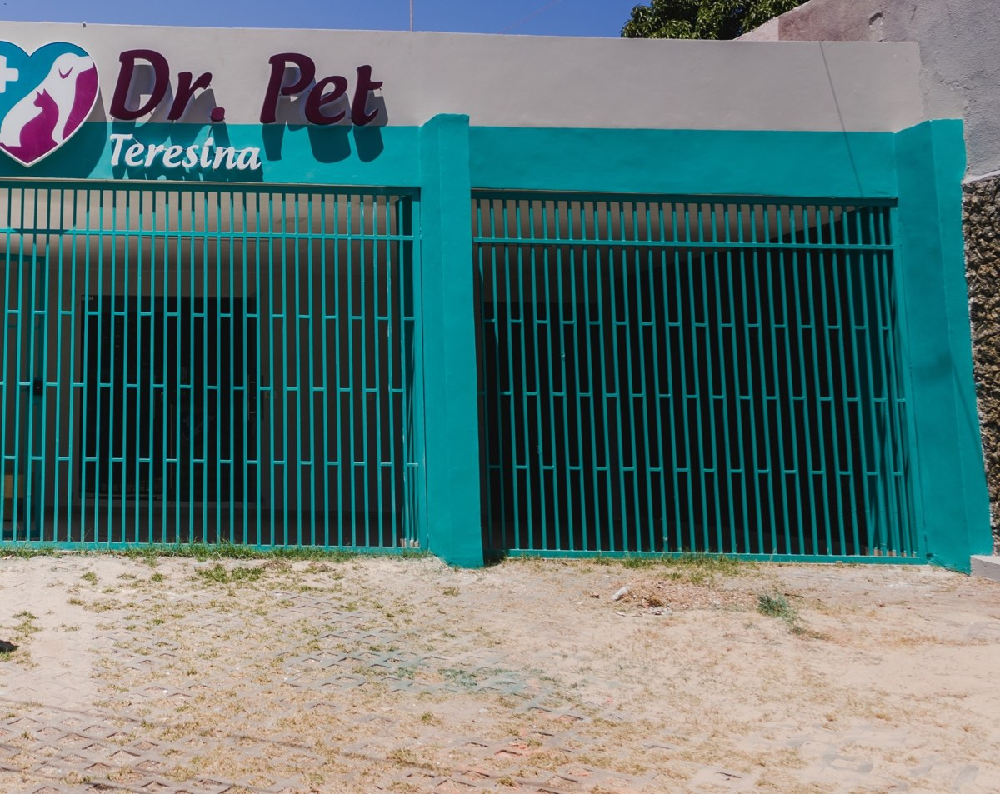

Cães e gatos · Teresina
Dr. Pet
Teresina.
Clínica veterinária
e pet shop na Piçarra.
Da saúde aos cuidados do dia a dia, um endereço para o seu pet.
Atendimento veterinário
O cuidado começa
por conhecer o serviço.
Indicações e orientações são individuais, definidas na avaliação do seu animal.
O veterinário
Diego Helcias
Cavalcante.
Médico-veterinário e proprietário da Dr. Pet Teresina.
Conheça o veterinário ↗01787
Antes de sair de casa
Três cuidados com a visita.
- Escolha o serviçoConsulta, vacinação, exame, banho e tosa ou loja: diga à equipe o que procura.
- Combine com a recepçãoConfirme o atendimento e as orientações antes de ir.
- Organize o que levarPara a consulta, separe carteira de vacinação e registros anteriores, se houver.
Produção científica
Uma trajetória
também na pesquisa.
Vamos combinar?
Que dia e hora
ficam bons para você?
Escolha uma preferência para preparar a conversa com a recepção. O atendimento depende da confirmação da equipe.
Prefiro perguntar primeiro ↗Dúvidas práticas
Antes da sua visita.
A clínica atende quais animais?
Cães e gatos. Para informações sobre a necessidade do seu pet, converse com a recepção.
A preferência já confirma a visita?
Não. Você revisa a mensagem no WhatsApp e decide se quer enviá-la. A recepção confirma manualmente o dia, a hora e as orientações.
Quais são os horários de atendimento?
Confirme os horários e a disponibilidade diretamente com a recepção antes de ir.
Preciso preparar o animal para um exame?
Peça à equipe a orientação específica para o exame e o animal. Não defina jejum ou altere medicamentos por conta própria.
Clínica, higiene e cotidiano
Seu próximo passo
é uma conversa.
Dr. Pet Teresina · Av. Leônidas Melo, 546 · Piçarra
Falar com a recepçãodrpetteresina@gmail.com ↗